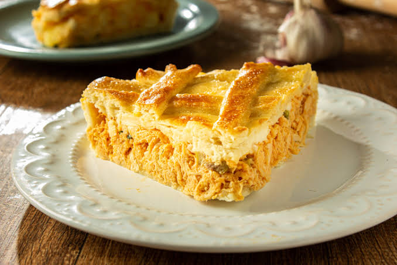

Torta de Frango Cremosa
Rendimento: 8 porções • Preparo: 1 hora • Dificuldade: Médio
Ingredientes
- 1 kg de peito de frango cozido e desfiado
- 1 cebola picada
- 2 dentes de alho
- 1/2 xícara de azeitonas fatiadas
- 2 colheres de requeijão
- 3 ovos
- 2 xícaras de farinha de trigo
- 1 xícara de leite
- 1 colher (sopa) de fermento
- Sal e pimenta
Modo de Preparo
- Refogue a cebola e o alho até translúcidos.
- Adicione o frango desfiado, azeitonas e requeijão; corrija o sal.
- Prepare a massa batendo ovos, leite, farinha e fermento.
- Na forma untada, coloque metade da massa, o recheio e cubra com o restante.
- Asse em forno médio por 35–40 minutos até dourar.